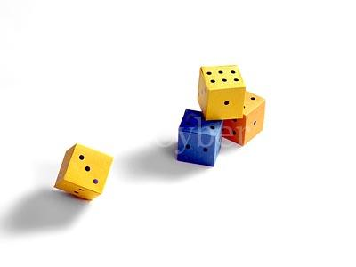

11명 중에 한 사람을 선정하기 위해서 주사위를 굴리기로 했다.
주사위를 유한한 횟수 이내로 굴려 균등한 확률로 11명 중의 한 명을 선정할 수 있는 방법을 서술하시오.
(단, 주사위는 정 6면체이며 주사위 이외의 다른 선택방법은 없다.)
이 문제를 풀 수 있습니까?
ps. 문제의 출제 배경 및 오답 사례 (2008/09/05 추가)
이 문제는 2008년 8월 22일 (주)네오플에 근무하는 정모씨가 출제한 '버스문제'에 응수하기 위해 출제하였습니다.
애시당초 확률 분배로는 풀 수 없다는게 쉽게 증명되기 때문에 다른 방법의 접근을 시도하라는 의도로 출제하였으나 8~90%의 사람들은 이 문제를 확률 분배, 혹은 경우의수 분배(같은 말임)로 풀려고 시도했습니다.
가장 흔한 오답으로는 2회 던져서 주사위 눈의 합을 이용해 배분한다는 것이었고 (이 의견은 끝없이 반복되었습니다.)
그 다음으로는 11회, 혹은 66회를 던지면 경우의수가 11의 배수가 될거라는 의견이었습니다.
예외가 발생하면 다시 굴리는 방법. 주사위가 아닌 다른 도구 혹은 선택수단(사람의 선택 포함)을 동원하는 방법.
하지만 이 문제는 결코 '방법을 서술하시오' 가 아닙니다.
제가 궁금했던 질문은 바로 '이 문제를 풀 수 있습니까?' 이기 때문입니다.
현재까지 가장 유력한 답은 '없다' 입니다.